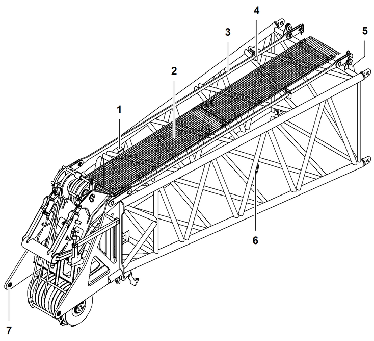
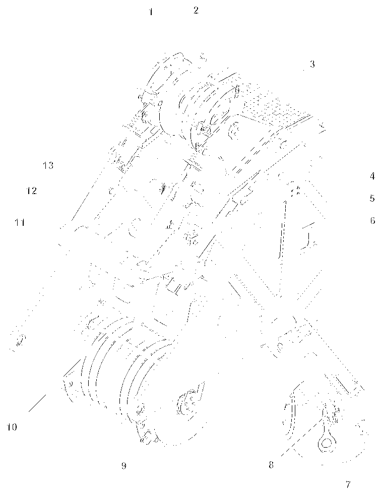
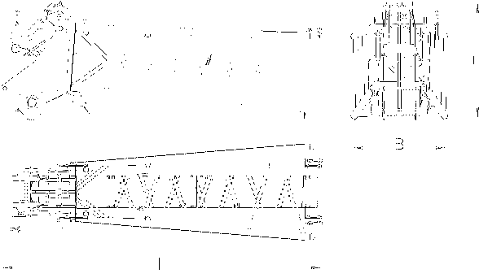

Hauptausleger-Kopf 2320.23

Fig. 101: Hauptausleger-Kopf 2320.23
Fig. 101: Hauptausleger-Kopf 2320.23
Anschlagpunkt (4x) | |
Podest (2x) | |
Transportposition (2x) der Hauptausleger-Haltestangen | |
Transporthalterung (2x) für Haltestangen | |
Koppellasche (2x) für Nadelausleger-Abspannstangen | |
Ausleger-Typenschild | |
Verbolzungspunkt (2x) für Spitzenausleger oder Nadelausleger |
An den Koppellaschen 5 werden die nicht benötigten Nadelausleger-Abspannstangen verbolzt, wenn kein Nadelausleger angebaut wird und die Nadelausleger-Abspannstangen am Hauptausleger verbleiben. Richtlinien für den Verbleib der Nadelausleger-Abspannstangen am Hauptausleger im Vorwort der gültigen Traglasttabelle beachten.

Fig. 102: Hauptausleger-Kopf 2320.23 Detail
Fig. 102: Hauptausleger-Kopf 2320.23 Detail
Nackenseilrolle (3x) für Seil der Winde1/Winde2 | |
Kleine Nackenseilrolle für Seil der Nadelausleger-Verstellwinde | |
Seilschutzvorrichtung (3x) | |
Verbolzungspunkt (2x) für hydraulische Rückfallstützen des verstellbaren Nadelauslegers | |
Führungsschiene (2x) für hydraulische Rückfallstützen des verstellbaren Nadelauslegers | |
Windmesser | |
Anlenkpunkt (2x) für Spitzenausleger | |
Anlenkpunkt (2x) für Seilfixpunkt | |
Seilrolle (10x) | |
Seilschutzvorrichtung (2x) | |
Arretierungsklappe für starre Rückfallstützen des Nadelauslegers | |
Führungsschiene (2x) für starre Rückfallstützen des Nadelauslegers | |
Oberer Nadelausleger-Endschalter (2x) |
ACHTUNG
Unzulässiges Einscheren von Seil der Winde1/Winde2 über kleine Nackenseilrolle!
Beschädigung der kleinen Nackenseilrolle.
Ausschließlich Seil der Nadelausleger-Verstellwinde über kleine Nackenseilrolle 2 führen. |

Fig. 103: Abmessungen - Hauptausleger-Kopf 2320.23
Fig. 103: Abmessungen - Hauptausleger-Kopf 2320.23
Benennung | Wert | |
|---|---|---|
Systemlänge |
7000 mm 22.97 ft | |
Systembreite |
2290 mm 7.51 ft | |
Systemhöhe |
2000 mm 6.56 ft | |
L | Länge |
8050 mm 26.41 ft |
B | Breite |
2420 mm 7.94 ft |
H | Höhe |
2950 mm 9.68 ft |
Gewicht (inkl. Haltestangen) |
4300 kg 9,480 lb | |
Technische Daten - Hauptausleger-Kopf 2320.23